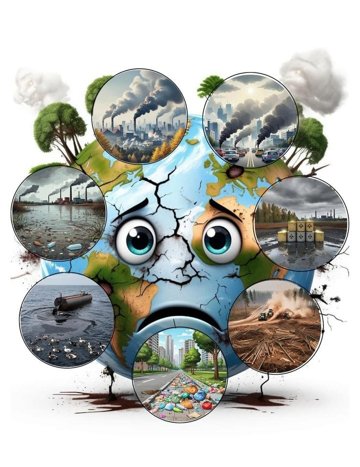

🌍 LA Pollution liée à la consommation des matiéres énergétiques et à ľutilisation des matières organiques et inorganiques dans les industries chimiques alimentaires et minérales
La pollution touche l’air, l’eau et le sol. Elle est causée par les gaz des usines et des voitures, les déchets industriels et les produits chimiques. Ces polluants provoquent des maladies, détruisent la nature et causent des pertes économiques. Pour réduire la pollution, il faut utiliser les énergies renouvelables, recycler les déchets, traiter les eaux usées et sensibiliser les citoyens à protéger l’environnement.
Objectifs d’Apprentissage
- Comprendre les différents types de pollution : air, eau, sol.
- Identifier les sources principales de pollution.
- Connaître les impacts sur la santé humaine et l’environnement.
- Analyser les effets économiques liés à la pollution.
- Proposer des mesures pour réduire et prévenir la pollution.
Introduction
Bienvenue à l'exposé
L’accroissement des activités industrielles et agricoles humaines a engendré une pollution étendue à tous les milieux environnementaux. La pollution désigne la contamination d’un milieu environnemental par un agent chimique, physique ou biologique, ce qui modifie les caractéristiques naturelles de ce milieu, altérant de manière plus ou moins importante le fonctionnement de son écosystème.

𝙇𝙖 𝙩𝙚𝙧𝙧𝙚 𝙚𝙨𝙩 𝙩𝙧𝙞𝙨𝙩𝙚
Questions sur l'Introduction
- Quelles sont les sources de la pollution industrielle ?
- Et quels impacts ont les polluants sur les milieux naturels ?
2BAC SPC 1